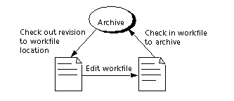

Planning a Project Database
Typically, a Serena ChangeMan Version Manager project database, which includes the archives, is on a networked file system and developers work on files locally. The workflow is as follows:

Before you define a project database, you need to know the following:
- Where the workfiles, or source files, that you want to place under source control are located.
- Where you want the archives for the files to be located, known as the archive location.
-
Where, by default, you want users to edit the workfiles. Often the workfile location is the directory in which the files originally reside.
- Whether or not any of the files that you are placing under source control are shared by more than one project or subproject.
- Whether or not you have existing (5.3/6.0) Version Manager archives and projects that you want to upgrade to the new release of Version Manager.
- Whether or not your environment is cross-platform.
See Also